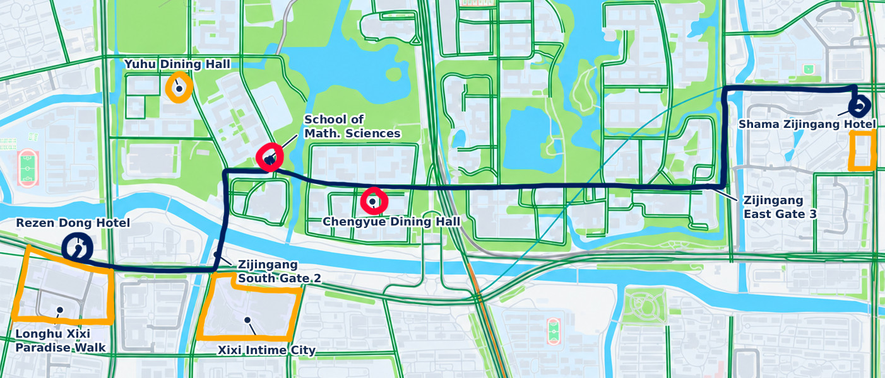

Venue information

Campus access
- Please remember to always bring your ID / passport for campus access.
Lectures
- All lectures at the School of Mathematical Sciences on Zijingang Campus (数学科学学院, 紫金港校区)
(not to be confused with the Institute for Advanced Study in Mathematics on the same campus) - Lecture hall on the 2nd floor
- Bus shuttle from Shama Hotel leaving Monday at 8:45 am (9:00 am the following days)
- Taxis/Didis can enter campus to bring you directly to the venue
- Walking distance: 2.5 km (Shama Hotel) or 1.2 km (Rezen Donggu Hotel)
Lunch
- Lunch at the Chengyue Dining Hall, 3rd floor, about 400 meters from the lecture hall
- Starbucks for coffee next to it
Dinner options (orange in the map)
- On campus, dining halls serve dinner, but 2nd floor counters only take campus card payment
- Best nearby area for restaurants is Longhu Xixi Paradise Walk
- Xixi Intime City is a closer alternative but less lively
- Street food places can be found along Longyu Street north of campus (click here). Further restaurants can be found east from there
- Simple restaurants can be found next to Shama Hotel

Mini course schedule
| Time | Saturday | Sunday |
|---|---|---|
| 09:00 – 09:30 | Registration | |
| 09:30 – 10:30 | GH Period Map 1 | GH Period Map 3 |
| 11:00 – 12:00 | GH Period Map 2 | GH Period Map 4 |
| 12:00 – 14:00 | Lunch Break | |
| 14:00 – 15:00 | SW Formula 1 | SW Formula 3 |
| 15:30 – 16:30 | SW Formula 2 | SW Formula 4 |
Sebastian Bartling
The Gross–Hopkins Period Map
After introducing Barsotti–Tate groups and Rapoport–Zink spaces, we construct the Gross–Hopkins period map on Lubin–Tate space via formal group laws and sketch its modern interpretation via the Fargues–Fontaine curve.
Riccardo Zuffetti
The Geometric Siegel–Weil Formula
A classical theorem of Siegel states that a weighted average of theta series associated with positive definite lattices in a fixed genus is an Eisenstein series. The work of Weil and Kudla–Rallis extends this identity to indefinite quadratic spaces. In the first half of this mini-course, I will present these results, first in the classical language of modular forms and then over the adeles. In the second half, I will introduce orthogonal Shimura varieties and explain Kudla's geometric version of the Siegel–Weil formula, which identifies the generating series of volumes of certain algebraic cycles on these varieties with an Eisenstein series.
Conference schedule
| Time | Monday | Tuesday | Wednesday | Thursday | Friday |
|---|---|---|---|---|---|
| 09:00 – 09:30 | Registration | ||||
| 09:30 – 10:30 | Liang Xiao | Si Ying Lee | Ian Gleason | Wei Zhang | Rong Zhou |
| 11:00 – 12:00 | Shizhang Li | Juan E. R. Camargo | Michael Rapoport | Ryan Chen | Laurent Fargues |
| 12:00 – 14:00 | Lunch Break | ||||
| 14:00 – 15:00 | Hui Gao | Raphaël Beuzart-Plessis |
Hike/ Free afternoon |
Ben Howard | Free afternoon |
| 15:30 – 16:30 | Heejong Lee | Luis Garcia | |||
Raphaël Beuzart-Plessis
On the $p$-Adic Interpolation of Fourier–Jacobi Periods for Unitary Groups
In this talk, I will present joint work with X. Dimitrakopoulou on the $p$-adic interpolation of Fourier–Jacobi periods on unitary groups that are compact at infinity. This involves revisiting part of Mumford's geometric construction of theta series, and has application to the construction of $p$-adic $L$-functions for $U(n)\times U(n)$.
Ryan Chen
CM $p$-Divisible Groups and Log Derivatives of Dedekind–Yun Local Zeta Functions
For an abelian variety with CM by the maximal order in a CM field, the Colmez conjecture predicts a precise formula relating the Faltings height of the abelian variety with log derivatives of certain Artin $L$-functions. This is no longer true for CM by non-maximal orders, where the Faltings height differs by a "height defect". We formulate a new conjecture relating "average height defects" for CM $p$-divisible groups with log derivatives of local Dedekind–Yun zeta functions for orders. I will also explain our more general conjecture relating "average height defects" for CM cycles on unitary Rapoport–Zink spaces with log derivatives of orbital integrals. This is joint work with Weixiao Lu.
Laurent Fargues
TBA
Hui Gao
Galois Representations over the Convergent de Rham Period Ring
Inside Fontaine's de Rham period ring $B_\mathrm{dR}^+$, there is a convergent subring which is exactly the (un-completed) stalk at the de Rham point of the Fargues–Fontaine curve. We study Galois representations over this convergent subring, and compare with the classical theory over $B_\mathrm{dR}^+$. Some tools in $p$-adic differential equations, in particular, the $p$-adic non-Liouville conditions will naturally appear. This is joint work with Yupeng Wang.
Luis Garcia
Special Cycles and Characters of Vertex Algebras
I will present work in progress on a construction of sheaves of vertex algebras associated with maps from a smooth projective curve into an orthogonal Shimura variety. The global sections of these sheaves naturally form a vertex algebra whose graded dimension recovers the classical generating series of degrees of special divisors studied by Kudla and Millson.
Ian Gleason
Towards a Local Model Diagram Beyond the Minuscule Case
The local model diagram is a key tool in the study of integral models of Shimura varieties, as it gives control over the sheaf of nearby cycles. In this talk, we explore a weak version of the local model diagram for integral models of moduli spaces of mixed-characteristic shtukas. We then discuss applications to the cohomology of $p$-adic period domains via affine Deligne–Lusztig varieties, and vice versa.
Ben Howard
Kudla–Millson Forms on Toroidal Compactifications
Kudla and Millson constructed modular forms valued in the cohomology of orthogonal and unitary Shimura varieties. I will explain that these have canonical extensions to modular forms valued in the cohomology of toroidal compactifications. This is joint work with Francois Greer and Salim Tayou.
Heejong Lee
Aspects of the mod $p$ Langlands Program
The categorical $p$-adic Langlands program predicts a close relationship between the ($p$-adic and mod $p$) representation theory of $p$-adic groups and the geometry of moduli stacks of étale $(\varphi,\Gamma)$-modules, known as Emerton–Gee stacks. In this talk, I will discuss how the representation theory of $\mathrm{GL}_n$ over $p$-adic fields is reflected in the geometry of these stacks. In particular, I will explain how the mod $p$ geometry of Emerton–Gee stacks helps explain, at least in part, the striking differences between the mod $p$ representation theory of $\mathrm{GL}_2(\mathbb{Q}_p)$ and that of other $p$-adic groups.
Si Ying Lee
Point Counting for Exceptional Shimura Varieties
I will talk about a general framework for defining $p$-isogenies with $G$-structure, as well as applications to counting mod $p$ points for Shimura varieties for which integral models are available, including those of exceptional type. This is joint work in progress with Keerthi Madapusi and Alex Youcis.
Shizhang Li
A Cohomological Bestiary of Classifying Stacks
This talk will survey recent advances in our understanding of the cohomology of classifying stacks of group schemes. We will explain what it means to study Hodge theory in this setting and review results of Totaro, Antieau–Bhatt–Mathew, and Petrov. Time permitting, we will also discuss recent work of Kehao Cheng and my forthcoming joint work with Petrov and, separately, with Kubrak.
Michael Rapoport
$p$-Integral Hecke Correspondences
Shimura varieties admit vector bundles with liftings of the Hecke correspondences (automorphic vector bundles). These vector bundles have a natural extension to $p$-integral models of good reduction of Shimura varieties. I will address the problem of determining the optimal power of $p$ by which one has to multiply the Hecke correspondences in the generic fiber to obtain integral cohomological correspondences. Joint work with U. Görtz and X. He.
Juan Esteban Rodríguez Camargo
Rational Analytic Prismatization
Joint work with Anschütz, Le Bras and Scholze. I will give an introductory talk to the theory of the rational analytic prismatization and its applications to $p$-adic Hodge theory and the $p$-adic Langlands program. In particular, I will mention how different incarnations of the $p$-adic Riemann–Hilbert correspondence can be understood in terms of formal properties of analytic stacks and the prismatization.
Liang Xiao
$p$-Primary Isogenies of CM Abelian Varieties mod $p$
The CM theory of abelian varieties over $\mathbb{Q}$ describes how Tate modules of abelian varieties change under the action of the Galois group $\mathrm{Gal}(\overline{\mathbb{Q}}/\mathbb{Q})$ (not just the Galois group of the reflexive field). In this talk, I explain a joint work with Xinwen Zhu in progress, in which we study how $p$-primary isogenies of CM abelian varieties mod $p$ change the Tate modules of the abelian varieties. These $p$-primary isogenies do not necessarily lift to characteristic zero; they play an interesting role in the study of "exotic" Hecke correspondences between special fibers of Shimura varieties.
Wei Zhang
Period Integrals of Products of many Automorphic Forms
Period integrals of products of at most three automorphic forms (from irreducible representations) have been studied in various contexts, including the Gan–Gross–Prasad setting. For products of more than three forms, although the picture appears to be more complicated, the period integrals seem to be nonzero in the absence of obvious obstructions. Such integrals arise naturally in the study of diagonal cycles on self-products of Shimura varieties. We will present a couple of simple results and formulate a potentially difficult conjecture.
Rong Zhou
Counting Points on Local Shimura Varieties
Kottwitz's classical point counting formula expresses the Frobenius–Hecke traces on the cohomology of Shimura varieties in terms of certain (twisted) orbital integrals. This forms a key step in Langlands' strategy to relate the $L$-function of Shimura varieties to automorphic $L$-functions. In this talk, I will present a new local analogue of Kottwitz's formula, which relates the cohomology of local Shimura varieties to twisted orbital integrals. This local formula bridges Kottwitz's global formula with the point-counting formula for Igusa varieties. As an application of our formula, we explain a new purely local approach, based on categorical Langlands, towards Rapoport's vanishing conjecture for certain twisted orbital integrals. This conjecture is itself a key ingredient in the global Langlands–Kottwitz method at a non-quasi-split prime. This is based on joint work in progress with Yihang Zhu.
Overview
A conference about Shimura varieties, p-adic geometry, and automorphic representation theory which will take place during November 2-6 at the School of Mathematic Sciences of Zhejiang University in Hangzhou. It was originally inspired by a similar event in Shenzhen 2025. Two mini courses for PhD students will be offered on Saturday and Sunday directly before.
Speakers
- Raphaël Beuzart Plessis (CNRS, Aix-Marseille University)
- Ryan Chen (MPI Bonn)
- Bin Dong (PKU)
- Laurent Fargues (CNRS, Jussieu)
- Hui Gao (SUSTech)
- Luis Garcia (UC London)
- Ian Gleason (NU Singapore)
- Ben Howard (Boston College)
- Heejong Lee (Korea IAS)
- Si Ying Lee (NU Singapore)
- Shizhang Li (CAS, Morningside Center)
- Michael Rapoport (Uni Bonn)
- Juan Esteban Rodríguez Camargo (MPI Bonn)
- Liang Xiao (PKU)
- Wei Zhang (MIT)
- Rong Zhou (Cambridge)
Mini courses
Two mini courses aimed at PhD students, each 4x60 minutes, will take place on October 31st and November 1st.
- Riccardo Zuffetti (Darmstadt) - The geometric Siegel-Weil formula
- Sebastian Bartling (Essen) - The Gross-Hopkins period map
Organized by Pol van Hoften, Andreas Mihatsch, and Yousheng Shi.
Travel planning, Registration
Travel planning
- For international travelers, flying to Shanghai and taking the taxi or train to Hangzhou is usually the fastest. Flying to Hangzhou can be more convenient because the local transport to the hotel is much faster, but an extra layover can add a bit of travel time.
- Two hotel options close to campus are the Shama Hotel and the Licheng Donggu Hotel.
Registration
- Registration for the event is closed.
Sponsors

The conference is sponsored in part by the Dutch Research Council (NWO) through grant VI.Veni.232.127.